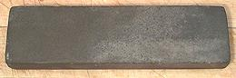
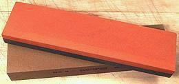
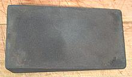
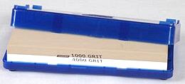
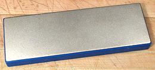

SAFARI
Users
General & Grit Sizes
Unfortunately grit rating systems are not always uniform from one sort of abrasive to another or one grading system to another. This chart is not 100% accurate, but far more accurate than you'd be able to detect.
Japanese "Waterstones" are usable to finer grits than other stones
because they wear away, presenting fresh sharp grit that cuts fast.
Diamond stones also cut fast but without wearing away.
Grit sizes are average for a range of sizes which may be different for each manufacturer.
| CAMI U.S. | FEPA Euro | Micron Size | Stones | Usage |
|---|---|---|---|---|
| 100 | P115 | 141 | Coarse Crystolon | Not used for kitchen knives |
| 150 | P150 | 93 | Coarse India Medium Crystolon | Prep very dull or damaged knives |
| 180 | P180 | 78 | Still pretty coarse | Prep very dull or damaged knives |
| 240 | P280 | 60 | Medium India Fine Crystolon 240 Waterstone | Prep fairly dull knives |
| 280 | P360 | 42 | Fine India | Aggressive medium for knives. |
| 320 | F280 | 36 | Medium Diamond | |
| 500 | P1000 | 20 | Soft Arkansas | Fine finished knife edge |
| 700 | P1500 | 14 | Hard White Arkansas Fine Diamond Medium White Ceramic 1000 Waterstone |
Fine finished edge Waterstone for knives Diamond for knives & tools Arkansas for woodworking tools |
| 1000 | F600 P2500 | 9 | Hard Black Arkansas Extra Fine Diamond | |
| 7.5 | 2000 Waterstone | |||
| 1500 | F1200 | 3 | 4000 Waterstone Extra Fine Ceramic | Fine polished Sushi knives |
| F2000 | 1.2 | 8000 Waterstone | Rather excessive |
Varieties of Stones
Natural Stones
 Natural stones are quarried from deposits of a mineral called novaculite. The most available are called Arkansas Stones, and come in soft and hard grades, but Washita (coarser than soft Arkansas) and Queer Creek Blue (variable, but around hard white Arkansas) are also available. Novaculite has a mohs hardness of 6.5, equivalent to Rockwell Rc 69. Most knife blades are around 5.5 (Rc 59).
In the past these stones were highly thought of for sharpening kitchen knives, but they have fallen out of favor because they have a harder time with stainless steel. They are considered "oil stones" but work just fine with water. Note that the best deposits have been quarried out, so some "Arkansas" stones are reconstituted from grit.
- Hard Arkansas is a very fine stone much liked by wood carvers and other craftsmen working in wood, but is really too fine to be practical for use with kitchen knives. Hard Translucent Arkansas is the top of the line and quite expensive.
- Soft Arkansas is a "medium" stone, cutting fairly quickly and producing a very sharp edge, but not the polished edge hard Arkansas produces. Soft Arkansas is suitable for sharpening carbon steel kitchen knives.
- Combination Kits Some sharpening kits include both soft and hard Arkansas along with a man-made coarse stone. Blocks of soft and hard Arkansas bonded back to back are also widely available.
Aluminum Oxide - India Stones
 "India Stone" is a trademark of Norton Abrasives for man-made stones of Aluminum Oxide that are vitreously bonded. In other words, they are heated to such a high temperature that the grains fuse together. Other companies can make similar stones but cannot call them "India". Aluminum oxide has a mohs hardness of 9.2. The photo specimens are 2 inch x 8 inch stones. The top one is fine on the top side, coarse on the bottom, and the bottom stone is medium.
Aluminum Oxide stones range from 150 grit to 280 grit and cut aggressively but not quite so much as Silicon Carbide. The medium (240 grit) would be considered "coarse" for sharpening kitchen knives, and the fine would be considered "medium". They are considered an "oil stone" but work just fine with water, Unfortunately Norton's stones come pre-oiled so I'd scrub it well with a strong kitchen cleanser before each use until the oil is mostly gone.
Silicon Carbide - Crystolon
 "Crystolon" is a trademark of Norton Abrasives for man-made stones of Silicon Carbide that are vitreously bonded. In other words, they are heated to such a high temperature that the grains fuse together. Other companies can make similar stones but cannot call them "Crystolon". Silicon Carbide has a mohs hardness of 9.5.
Silicon Carbide stones are blue-gray in color and are in the coarser range, from 100 grit to 240 grit. Fine Crystolon is adequate for finish sharpening kitchen knives, but too coarse to be ideal. Silicon carbide stones are considered "oil stones" but work just fine with water.
Waterstones
 Water stones are noted for cutting very fast, but at a cost. The stone itself wears fairly fast and needs to be straightened with a straightening stone now and then, This holds for both natural and man-made water stones, whether Japanese or American, and is by design. American stones tend to stay flat longer but still cut as well as the Japanese. Photo © Norton
The archetype water stone is the Japanese natural stone, but the natural stone has been pretty much mined out, so most are made from abrasive grit bonded with natural clay, resin, or fired like an India stone but less firmly. Coarser stones are often made from silicon carbide and finer stones from aluminum oxide.
Water stones should be soaked in water for about 15 minutes before using.
Waterstones are generally listed by a grit fineness rating that does not correspond with ratings for other types of stone.
- 220: A very coarse stone for rapid removal of material from badly dulled or damaged blades.
- 1000: A medium stone very useful for sharpening kitchen knives.
- 4000: A fine stone, about the finest you'd want for finishing kitchen blades.
- 8000: A very fine stone producing a mirror finish. Rather too fine for culinary use but popular for wood cutting tools.
Norton makes a combination 1000 / 4000 stone which is very good for
kitchen sharpening, if you want to go with water stones. Remember, when
ordering water stones, be sure to also order a flattening
stone (actually, some use a sheet of similar grit silicon carbide
sandpaper on a flat surface).
Diamond Stones
 These "stones" are actually made of metal with a surface of embedded man-made diamond grit. They stay very flat, are long lasting, cut fast and are used with water as a lubricant. They can be used to flatten other stones and can be used to sharpen ceramic knives which have a mohs hardness of 8.5. Diamond has a mohs hardness of 10. The photo specimen is the fine (700 grit) stone I use to finish an edge, and instead of a steel for dressing the edge during use.
Diamond stones come in a full range of grits from very course to extra fine. They come in two varieties, with a patterned surface and a continuous surface. The patterned is fine for knives but the continuous surface stones are recommended for small pointed tools like drill bits.
Pricing of diamond stones has become fairly reasonable as man-made diamonds
become cheaper and cheaper (gem quality man-made diamonds are also becoming
very cheap) but there is still a significant premium for diamond stones.
A Cheaper Alternative
Get some smooth wooden blocks and glue to them (using a very thin glue so there are no lumps) "Wet or Dry" sandpaper from the local hardware store. The grit sizes listed on them are the CAMI sizes, so use the chart at the top of this page as a guide. "Wet or Dry" sandpaper is made from silicon carbide abrasive grit resin bonded to the backing.
Some woodworking craftsmen use whole sheets of Wet or Dry stuck down to plates of glass and claim it gives them a better edge than stones, and with a better grit selection. Wet or Dry is available from 60 grit down to 2000 grit, but many hardware stores don't carry anything finer than 600 grit.
Links
Stores and manufacturers listed here are typical and the listing does not constitute an endorsement or preference over other suppliers.
- S1 - Stones - Sharpening Supplies
- S3 - Stones - Best
- S4 - Diamond Stones - DMT Store